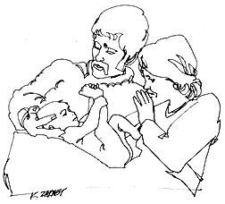

Atter living some time in Holland-where natural childbirth is the accepted form of delivery-and after preparing myself by reading and practicing the exercises in THE NEW CHILDBIRTH by Erna Wright, our first child was born last summer in England by the Lamaze method.
I feel I was well prepared by the six months of exercises I had done and the weeks of breathing practice I had undergone with the help of a local clinic's midwife. Still, the labor was long and hard.
The delivery, however, was short and easy . . . with my husband right there holding my left foot and propping my head for most efficient breathing. I would have hated to have been under anesthetic and missed the thrill of feeling my baby slither out like a fish!
When my husband took a job in England for the period of time in which we expected the baby, I looked for an English doctor who would cooperate with natural childbirth. In Hampshire County where we were living, however, it is customary for first babies to be delivered in hospital and only later babies to be delivered at home by a midwife, usually with a doctor in attendance.
The doctor we settled on was not keen on the idea of natural childbirth for a first baby; nor did he especially want my husband in the delivery room. When he saw how adamant we were, however, he agreed. With that out of the way, the doctor and nursing staff (all trained midwives) of the maternity division of the Royal Hampshire Hospital in Winchester did everything they could to help us have the baby the way we wanted.
I was in hospital for nine days as is customary in England where (although I did not qualify) hospitalization is paid for by National Health. The baby roomed in all day every day and was out of my quarters only to be bathed or if he made such a fuss at night that I couldn't sleep.
I think "rooming in" is wonderful and was happy to have had the experience of getting to know my baby and really learning how to care for him before we were on our own together. They brought him in to nurse for the first time when he was three hours old and-at this writing-he is 8 months old and hasn't had a bottle yet.
Our baby is such an alert, healthy and happy child that I can't help feeling that the psychological and physical preparation I went through, as well as the breast feeding, has really paid off.
Because childbirth is such a strenuous physical event, you should train for it as you would an athletic contest and the Lamaze pre-natal exercises in Erna Wright's THE NEW CHILDBIRTH take only fifteen minutes a day. Mrs. Wright is an English midwife and her book is a series of lectures about pregnancy and childbirth that she gives to classes of expectant mothers and fathers. Each lecture is followed by a short course of exercises planned to prepare the mother's body for the job it must do. The exercises build on one another and are assisted by controlled breathing which helps the mother control her body and relax during labor and delivery.
If Erna Wright's book helped me in the physical and psychological areas, Adelle Davis' LET'S HAVE HEALTHY CHILDREN was equally important in my nutritional preparation. Mrs. Davis suggests building your body nutritionally for at least one year before your child is conceived. Her book covers the pre-natal period, the child's diet from birth through the pre-school years and gives advice on both breast feeding and bottle feeding a baby.
Two other books complete my "childbirth shelf" of necessary information: PREGNANCY AND BIRTH by Dr. Alan Guttmacher and THE RIGHTS OF INFANTS by Dr. Margaret A. Ribble. Dr. Guttmacher's book answers all the possible questions you might have about what is happening physically to your body during pregnancy and what delivery is like while Dr. Ribble's book will help you cope psychologically with this new being once he is born.
LET'S HAVE HEALTHY CHILDREN, Adelle Davis, Revised Edition, 1959, New York, Harcourt, Brace & World. $5.75.
PREGNANCY AND BIRTH, Alan Guttmacher, Signet, $.75, (paper ).
THE RIGHTS OF INFANTS, Margaret Ribble, New York, Columbia University Press, 0943.
THE NEW CHILDBIRTH, Erna Wright, 1968, Hart Publishing, 510 Avenue of the Americas, New York, N.Y., 10011. (paper), $2.45.
|
 |
|
|